Розряди та значення цифр
-
Розряди
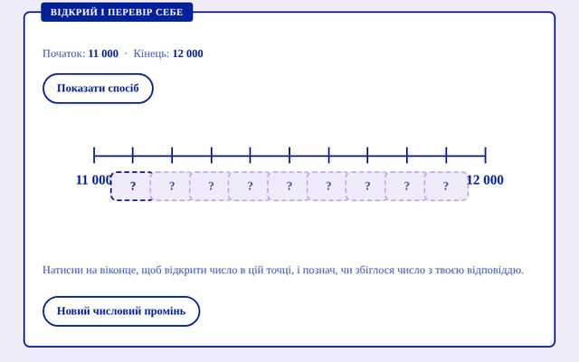
Детектив числового променя
Знайди пропущені підписи на числовому промені: знайди різницю, поділи її на кількість поділок і підпиши всі позначки.
-
Розряди
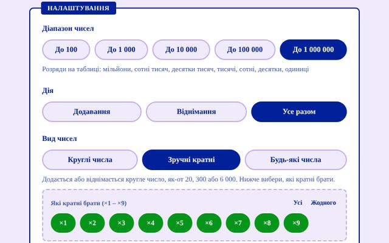
Розряди: тренажер
Дивись, як фішки лежать у таблиці розрядів, і встигни до кінця таймера обчислити приклади на додавання і віднімання.
-
Розряди
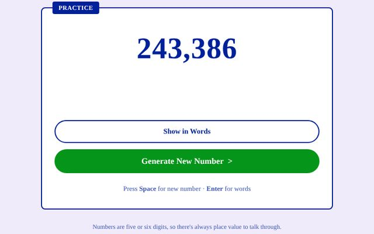
Числа словами (English)
Прочитай уголос велике число, а потім перевір, як його записують словами. Тут ти тренуєшся записувати числа АНГЛІЙСЬКИМИ словами, тому цей матеріал англійською мовою.
-
Розряди
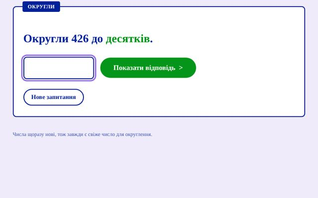
Округлення: тренажер
Округли числа до десятків, сотень або тисяч, а потім подивись на числовому промені, як це працює.
-
Розряди
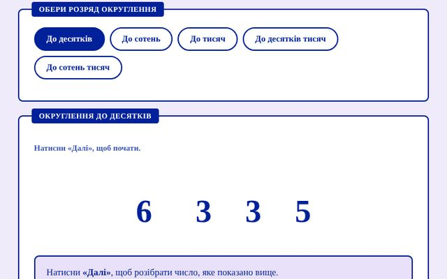
Округлення крок за кроком
Навчальний матеріал, який крок за кроком показує, як округлити будь-яке число: обвести, підкреслити, змінити, замінити нулями.
Додавання і віднімання
-
Додавання, віднімання
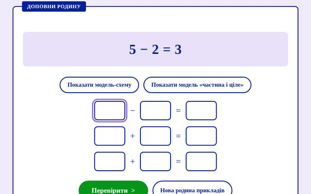
Родини прикладів
За одним прикладом склади решту трьох із тієї самої родини: на додавання і віднімання або на множення і ділення.
-
Додавання, віднімання
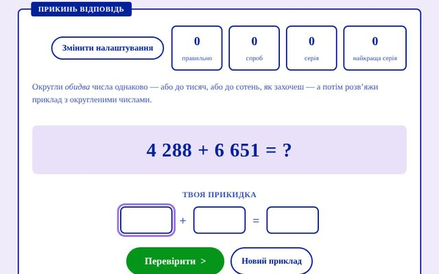
Прикидка за допомогою округлення
Округли обидва числа в прикладі на додавання або віднімання до тисяч чи сотень, а потім за округленими числами прикинь відповідь.
-
Додавання, віднімання
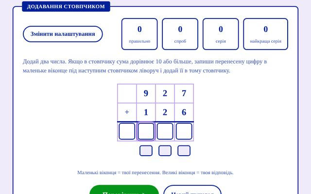
Додавання і віднімання стовпчиком
Виконай обчислення в таблиці зі стовпчиками, самостійно записуючи перенесення або обміни, а потім введи остаточну відповідь.
-
Додавання, віднімання
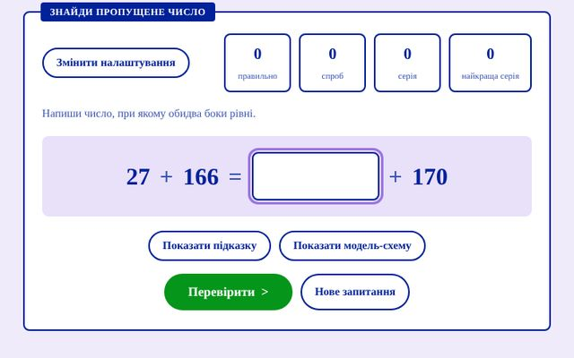
Пропущені числа
Знайди пропущене число в парі рівних прикладів: подивись, як одне число змінилося, щоб вийшло інше.
Множення і ділення
-
Множення, ділення
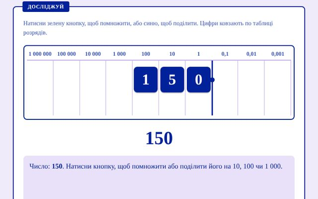
Множення і ділення на 10, 100, 1 000
Дивись, як цифри зсуваються по таблиці розрядів при множенні й діленні на 10, 100 або 1 000, а потім тренуйся.
-
Множення, ділення
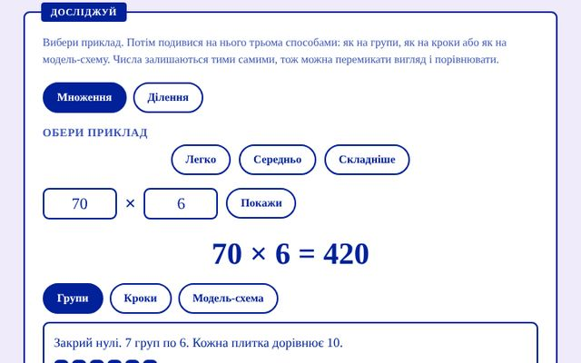
Множення і ділення на круглі числа (кратні 10)
Дивись на 6 × 800 або 3 500 : 700 як на групи, кроки та модель-схему, а потім тренуйся.
-
Множення, ділення
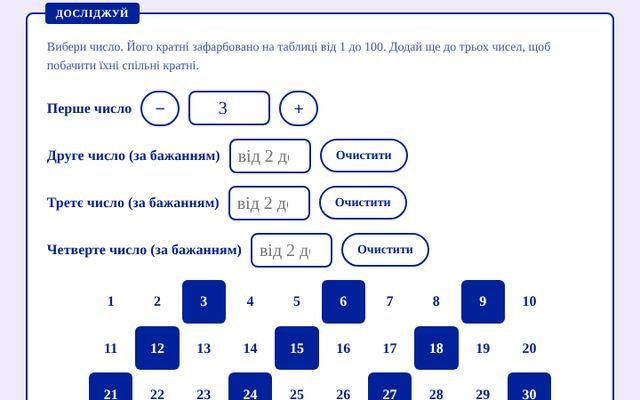
Кратні та спільні кратні
Досліджуй кратні в таблиці від 1 до 100, а потім тренуйся знаходити кратні, спільні кратні та найменше спільне кратне.
-
Множення, ділення
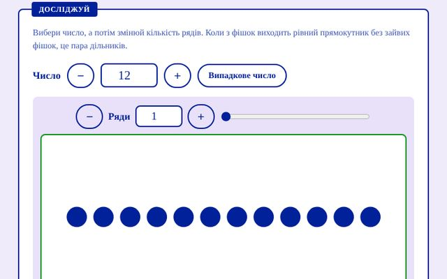
Дільники та спільні дільники
За допомогою фішок знайди дільники числа, а потім тренуйся записувати дільники та спільні дільники.
-
Множення, ділення
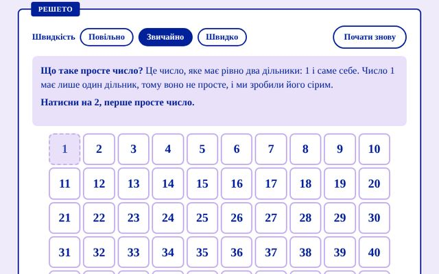
Прості числа
Подивись, як решето Ератосфена знаходить прості числа до 100, а потім тренуйся розрізняти прості та складені числа.
-
Множення, ділення
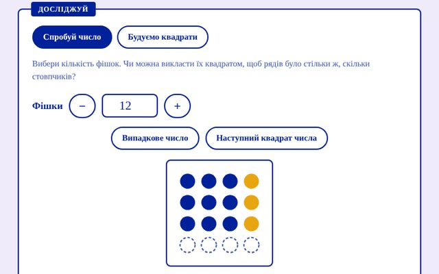
Квадрати чисел
За допомогою фішок побач, чому квадрати чисел так називаються, а потім тренуйся з квадратами і записом у квадраті.
-
Множення, ділення
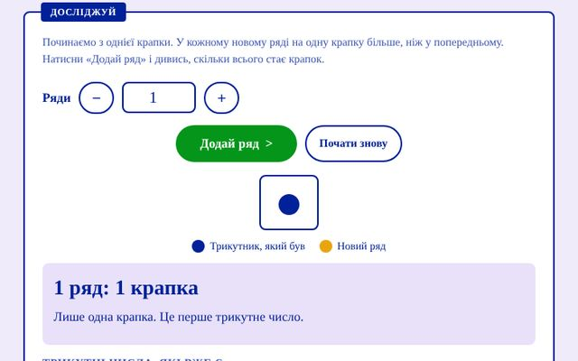
Трикутні числа
Будуй трикутники ряд за рядом, дізнайся, звідки беруться трикутні числа, а потім тренуйся знаходити наступне.
Дроби
-
Дроби
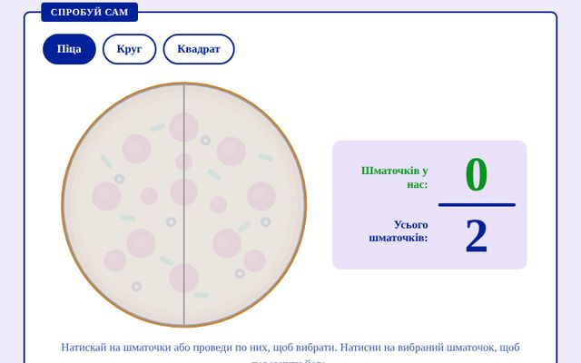
Дроби: шматочки
Розріж піцу, круг або квадрат на рівні шматочки, вибери кілька й подивись на дріб цифрами та словами.
-
Дроби
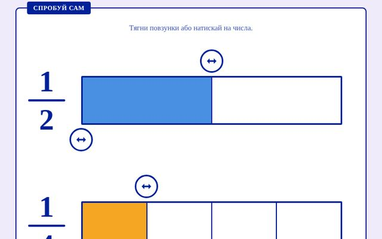
Дроби: рівні смужки
Змінюй верхнє й нижнє число в двох смужках-дробах. Коли смужки показують однакову кількість, вони стають зеленими.
-
Дроби
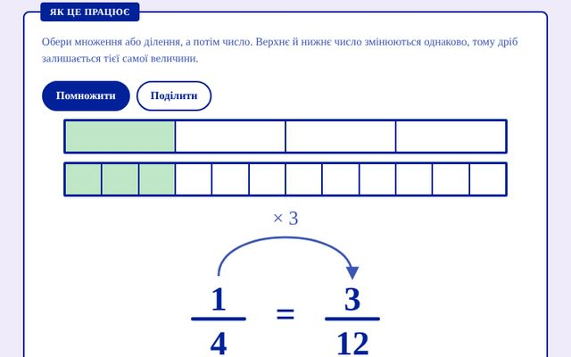
Пошук рівних дробів
Дізнайся, чому верхнє й нижнє число треба множити або ділити на одне й те саме число, а потім знайди пропущене число.
-
Дроби
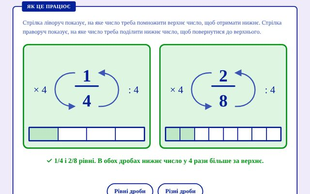
Дроби: метод відношення
Зазирни всередину дробу й дізнайся, скільки разів верхнє число вміщується в нижньому. Дроби з однаковим відношенням рівні.
-
Дроби
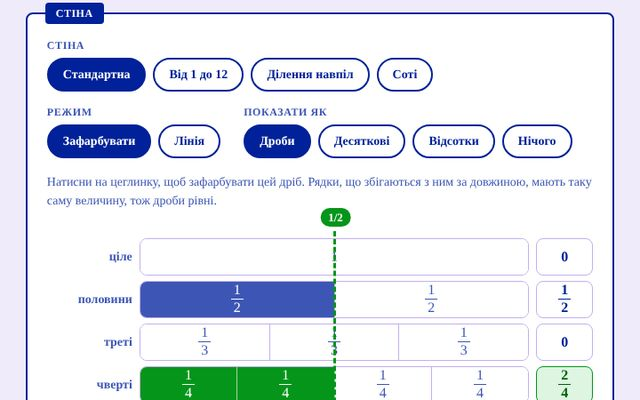
Стіна дробів
Зафарбуй дріб на стіні й побач усі рядки, що з ним збігаються. Води лінію по стіні, щоб знайти рівні дроби.
-
Дроби
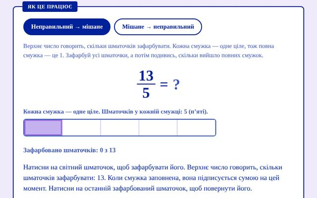
Мішані та неправильні дроби
Зафарбовуй шматочки в смужках і перетворюй неправильні дроби на мішані числа та навпаки.
-
Нове Дроби
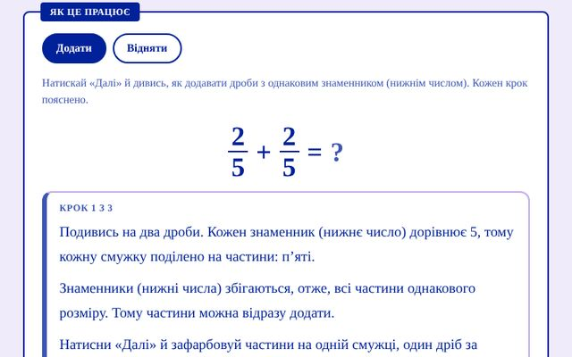
Додавання й віднімання дробів
Зафарбовуй шматочки на смужці й додавай та віднімай дроби з однаковим знаменником.
-
Нове Дроби
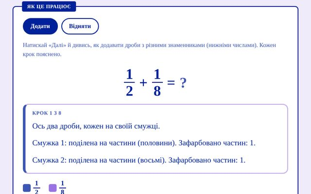
Дроби з різними знаменниками
Поділи дроби на рівні частини так, щоб нижні числа збіглися, а потім додай або відніми їх.
-
Нове Дроби
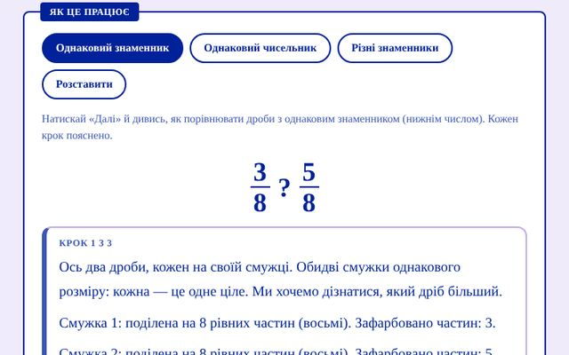
Порівняння та розставляння дробів
Дізнайся, який дріб більший, і розстав дроби за порядком за допомогою смужок, поділених на рівні частини.
Математичні навички
-
Навички
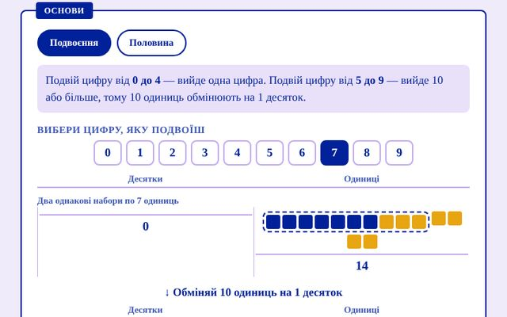
Подвоєння і половина
Дивись, як числа подвоюються і діляться навпіл за допомогою блоків розрядів, зокрема обмін 10 одиниць на 1 десяток, крок за кроком. Потім тренуйся на шести рівнях.
Нічого не знайдено. Спробуй інше слово.